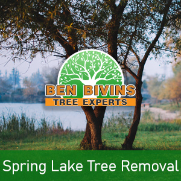
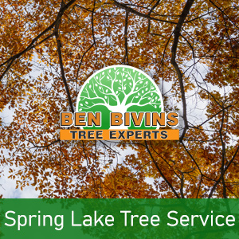

If you are searching for tree service in Spring Lake or tree removal in Spring Lake, look no further. Ben Bivins Tree Service has been delivering top notch tree services to Spring Lake for many years.
Facts About Spring Lake Tree Removal

Do you possess a dead or unappealing tree which needs to be removed? Tree removal is often a dangerous job that requires the correct equipment and safety protocols. Even though it might be appealing to eliminate a tree on your own from your residence, it’s really a choice that puts someone in jeopardy, without the appropriate training. There could be various reasons why you are thinking about a tree removal in Spring Lake:- Tree is blocking too much natural light on your lawn
- Tree is dead or detrimental and a possible safety risk
- Tree is overgrown and presents a threat if substantial limbs drop
- Tree was harmed during a weather event and is beyond the stage of preserving
- You are thinking about remodeling that could ultimately damage the trees
- Tree is dropping a great number of limbs, leaves, or pine needles
Ben Bivins is fully insured and licensed tree company. Don’t take the risk of using an uninsured tree company or depending upon a friend or family member to accomplish this type of work. Our team is expertly educated and our company carries the appropriate qualifications to make certain your Spring Lake tree removal will be conducted in the safest and most efficient way possible. Tree removal demands the usage of serious machinery and hazardous equipment that should only be left to the professionals. Leave it to the specialists! Give us a call for a quotation for your Spring Lake tree removal.
Seeking out Tree Service in Spring Lake NJ?

We perform all facets of Spring Lake tree service. A few of these services include:- Tree Trimming – Is a tree on your property overgrown? Is your property lacking sunlight caused by an overgrown tree? Trimming a tree’s limbs can make a huge difference and may allow you to keep a tree you otherwise considered eliminating.
- Pruning – Keep the trees happy and healthful. Pruning consists of assessing a tree’s health and deciding to remove branches selectively to improve its wellness and longevity.
- Crown Reduction – We are able to lessen the scale of your tree’s canopy with this process. Our crew will assess your trees and make recommendations to eliminate specific branches which will reduce canopy coverage.
- Emergency Tree Service – Do you have a downed tree that requires immediate attention? Is there a tree that is on the verge of causing destruction if not attended to immediately? You could be a prospect for emergency tree service.
If you’re a Spring Lake resident requiring tree service, Contact Ben Bivins Tree Experts. Scheduling can vary according to weather, season and our current work load. Our representative will give you a quote and let you know date ranges available for service after evaluating your specific needs.
Spring Lake Firewood for Sale
It’s no surprise that a Spring Lake tree removal company might have a surplus of firewood! If you are seeking firewood for a wood burning stove or fireplace, contact Ben Bivins Tree Experts today. Firewood availability can vary throughout the year.